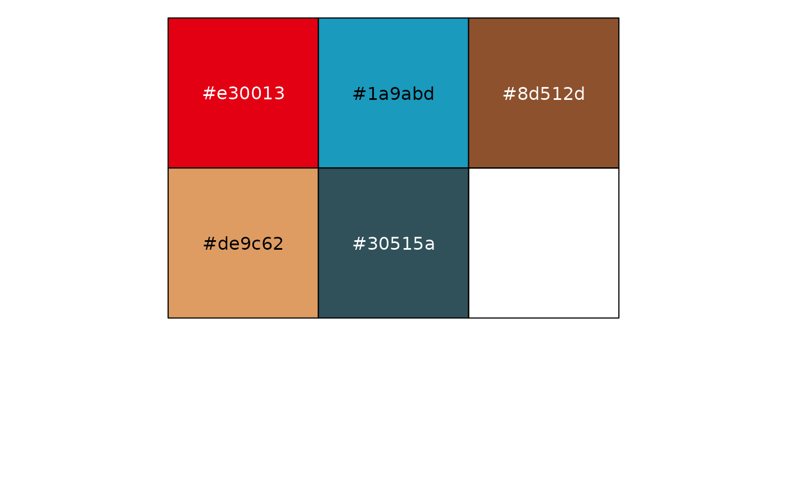

tintin_pal.RdA wrapper function around Tintin_clrs to
turn it into a palette function compatible with
discrete_scale.
tintin_pal(
alpha = 1,
begin = 0,
end = 1,
direction = 1,
option = "the_blue_lotus"
)The alpha transparency, a number in [0,1], see argument alpha in
hsv.
The (corrected) hue in [0,1] at which the color map begins.
The (corrected) hue in [0,1] at which the color map ends.
Sets the order of colors in the scale. If 1, the default, colors are ordered from darkest to lightest. If -1, the order of colors is reversed.
A character string indicating the color map option to use. Options are available:
"Tintin in the Land of the Soviets"
"Tintin in the Congo"
"Tintin in America"
"Cigars of the Pharaoh"
"The Blue Lotus" (Standard)
"The Broken Ear"
"The Black Island"
"King Ottokar's Sceptre"
"The Crab with the Golden Claws"
"The Shooting Star"
"The Secret of the Unicorn"
"Red Rackham's Treasure"
"The Seven Crystal Balls"
"Prisoners of the Sun"
"Land of Black Gold"
"Destination Moon"
"Explorers on the Moon"
"The Calculus Affair"
"The Red Sea Sharks"
"Tintin in Tibet"
"The Castafiore Emerald"
"Flight 714 to Sydney"
"Tintin and the Picaros"
"Tintin and Alph-Art"
See Tintin_clrs for more information on the color palettes.
scales::show_col(tintin_pal()(5))
